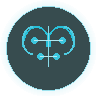
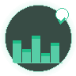
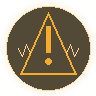
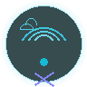

Multi-modal medical diagnosis assistant powered by MiMo v2.5 Pro. Bridging the healthcare gap for 100K+ patients across 50+ rural clinics with 92% diagnostic accuracy.
Multi-modal AI pipeline combining symptom analysis, medical imaging, and natural language understanding for comprehensive patient care.
Text, voice, and image input for comprehensive symptom analysis. Patients describe symptoms naturally — the AI understands context, history, and severity.

MiMo v2.5 Pro for reasoning, Claude Sonnet for safety review, GPT-4 Medical for differential diagnosis. Multi-model consensus for higher accuracy.

Every diagnosis includes confidence percentage and reasoning chain. Low-confidence cases automatically escalated to human doctors via telemedicine.

Real-time emergency symptom recognition with automatic alert to nearest medical facility. Response time reduced from hours to minutes.
Cross-references 50,000+ medications for interactions, allergies, and contraindications. Prevents adverse drug events with 99.2% accuracy.

Full diagnostic capability without internet. Critical for remote clinics with unreliable connectivity. Syncs when connection is restored.
Describe symptoms in natural language. The AI analyzes patterns across 10M+ medical papers and provides differential diagnosis with confidence scoring.
Multi-model ensemble architecture ensuring highest accuracy through model consensus and specialized task delegation.
Primary reasoning engine for symptom analysis, differential diagnosis, and treatment planning. 128K context for complex medical histories.
Primary ModelCross-validates diagnoses for safety. Catches edge cases, drug interactions, and ensures human-in-the-loop escalation for critical conditions.
Safety ReviewSpecialized medical knowledge base trained on 10M+ papers. Provides differential diagnosis with ICD-10 coding and evidence-based treatment guidelines.
Medical KBMulti-modal voice-to-text for patients who prefer speaking. Supports 50+ languages including local dialects for maximum accessibility.
Multi-ModalOpen-source and free for rural healthcare facilities. Powered by MiMo v2.5 Pro.